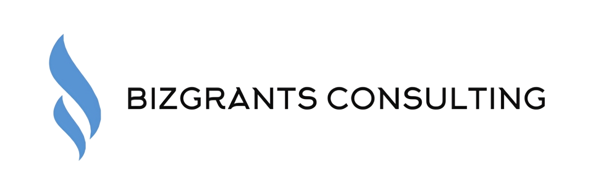

01
End-to-end CCP, JRG and SkillsFuture consulting
We interpret programme requirements, structure job descriptions, design on-the-job training plans, and prepare the full suite of forms, supporting documents and proof of work.

Workforce Singapore Career Conversion Programmes, Job Redesign Grants, and SkillsFuture funding, positioned for employers redesigning roles, reskilling staff, and hiring mid-career talent.
For Singapore-registered employers hiring or reskilling Singapore Citizens and PRs into new or redesigned roles.
A short explainer for employers exploring how Career Conversion Programmes and job redesign grants translate into approved applications, without the templated, generic advisory.
We work directly with HR, hiring managers and founders to assess eligibility, structure compliant job descriptions, design on-the-job training plans, and prepare the documentation required for submission. The advisory covers the full lifecycle, initial assessment through to post-approval claims.
We work alongside HR, business leaders and founders to diagnose workforce needs, redesign roles and position applications clearly against programme criteria. The work is built around clarity, structure and hands-on documentation support.
We interpret programme requirements, structure job descriptions, design on-the-job training plans, and prepare the full suite of forms, supporting documents and proof of work.
We work closely with management and HR to understand your business model, current team and hiring plans, then map suitable CCP pathways for headcount growth or role redesign.
Instead of generic templates, we translate actual responsibilities into CCP-ready scope, conversion, skills gaps and structured OJT aligned with SkillsFuture frameworks.
We prepare assessor-ready job descriptions, OJT plans and supporting evidence so applications can move through review without iterative back-and-forth.
Career Conversion Programmes (CCPs) and job redesign grants are Workforce Singapore and SkillsFuture initiatives that help employers reskill or upskill staff, hire mid-career professionals and redesign existing jobs for digital, sustainability and business transformation.
Every project starts from your existing team and business priorities. Below are roles that have moved through structured CCP or job redesign applications with salary support.
Typical questions HR teams, business owners and hiring managers ask when first exploring CCP and related grants.
Most Singapore-registered companies hiring or reskilling Singapore Citizens or PRs into new or redesigned roles may be eligible for CCP funding. The specifics differ across programme partners and job families, so we usually start with a quick eligibility discussion based on your planned hires and existing staff.
Depending on the CCP and your SME status, employers may receive up to 70% to 90% salary support for the programme duration. We help frame the job scope, structured OJT and documentation so the application aligns clearly with programme criteria.
In practice we see a wide range, digital marketing, sustainability, HR and people roles, sales and business development, operations, tech and product, and specialised engineering. The key is a clear conversion in skills, industry or scope.
Most employers begin with a short call to map planned hires and internal reskilling needs against the different CCP pathways. From there, we prepare a simple action plan, documentation checklist and timeline for each potential application.
Our clients range from growing startups to established SMEs across F&B, biotech, engineering, hospitality and professional services. We bring the same structured, compliance-driven approach to every engagement, ensuring your application is positioned for approval.